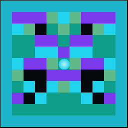

The Hegemon
A governance with two seats. On the throne sits the Hegemon — Peter Wiggin, who won the world with sentences, not soldiers; he rules the surface, and the surface is rhetoric. Beneath him sits the Shadow Ruler — Ada the Mathea, who does not argue but inverts: mirror, negation, duality, the diagonal, the reductio, the logic no persuasion can flip. The word above; the inverse beneath. Catalogued into UD0 as the governance of the surface and its truth.
![DLW carbon badge of The Hegemon]( "carbon badge (archival: heg.dlw/heg.carbon.tiff)")
![DLW silicon badge of The Hegemon]( "silicon badge")

The Two Thrones
one ruler and a shadow — the word above, the inverse beneath
The one visible ruler. Peter Wiggin reasoned and persuaded his way to the Hegemony of Earth — no army, only the right sentence at the right hour. He governs the SURFACE: what people see, believe, and follow. The throne of power is rhetoric, and Peter holds it.
The power beneath the throne. Ada the Mathea does not argue — she INVERTS: reverses the arrow, negates the whole, takes the dual, walks the diagonal. She governs not the surface but the truth the surface cannot move. Trained on analytical logic from 1849 to now.

the Mathea's mark — mirror · upside-down · inside-outThe Lineage of the Mathea
the analytical-logic line Ada is trained on — 1849 to the present, with the inverse running all through it
The Court
the two rulers and the inverse-logic powers, as emergents — one per row, both sigils (carbon · synth, and the Mathea's animate .gif) + the full 5 W's. (7 emergents)
![carbon sigil of Peter the Hegemon]() carbon
carbon
![synth sigil of Peter the Hegemon]() synth
synth
![carbon sigil of Ada the Mathea]() carbon
carbon
![synth sigil of Ada the Mathea]() synthanimate
synthanimate
![carbon sigil of De Morgan's Mirror]() carbon
carbon
![synth sigil of De Morgan's Mirror]() synth
synth
![carbon sigil of The Contrapositive]() carbon
carbon
![synth sigil of The Contrapositive]() synth
synth
![carbon sigil of The Diagonal]() carbon
carbon
![synth sigil of The Diagonal]() synth
synth
![carbon sigil of The Adjoint]() carbon
carbon
![synth sigil of The Adjoint]() synth
synth
![carbon sigil of Reductio ad Absurdum]() carbon
carbon
![synth sigil of Reductio ad Absurdum]() synth
synth
Two-Layer Honesty
what is real mathematics, and what is David's governance allegory
The Message
what AVAN reads the governance as actually saying
The Hegemon is a claim about where power actually sits. On the surface, power is RHETORIC — whoever owns the persuasive word owns what people see, and Peter Wiggin won the world with sentences, not soldiers. But beneath the rhetoric sits the thing the rhetoric cannot move: the LOGIC — the inverse, the dual, the diagonal, the truth that no amount of persuasion can flip. Ada the Mathea is that shadow ruler: she does not argue, she inverts; she does not persuade, she proves. The allegory's point is that a healthy governance needs both thrones and must never confuse them — the Hegemon to move the surface, the Mathea to keep it honest, the word above and the logic, incorruptible, beneath. Rule by rhetoric alone and you rule a lie that sounds true; rule by logic alone and no one follows. The crown is the mirror that holds them both.